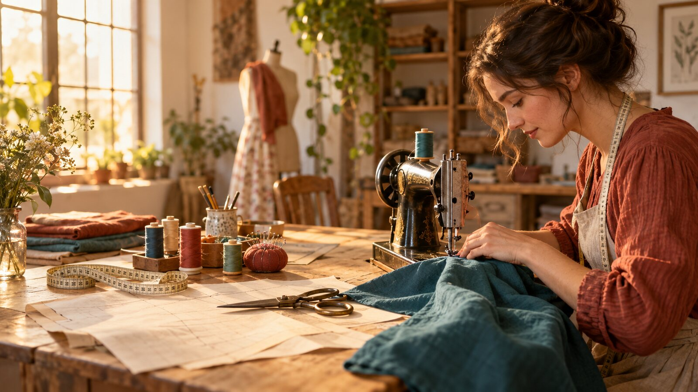
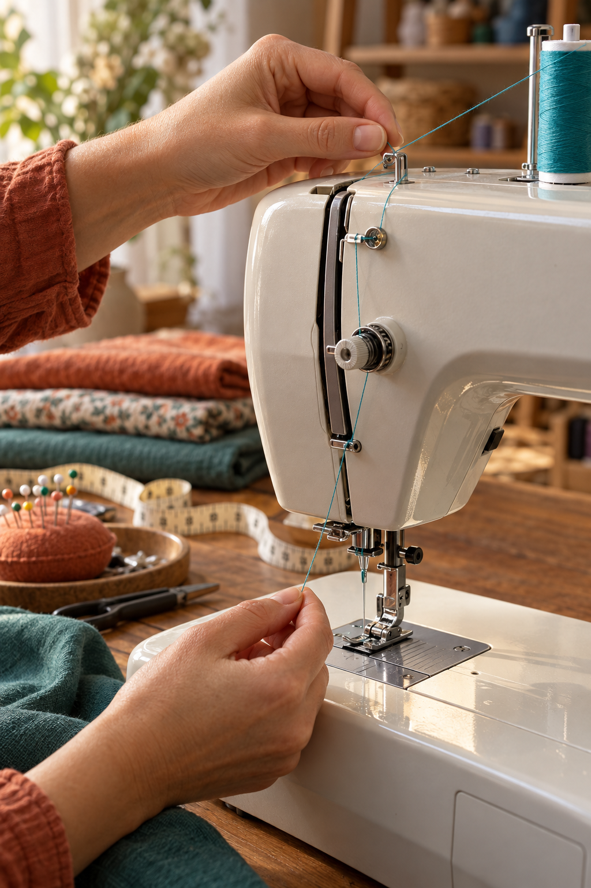
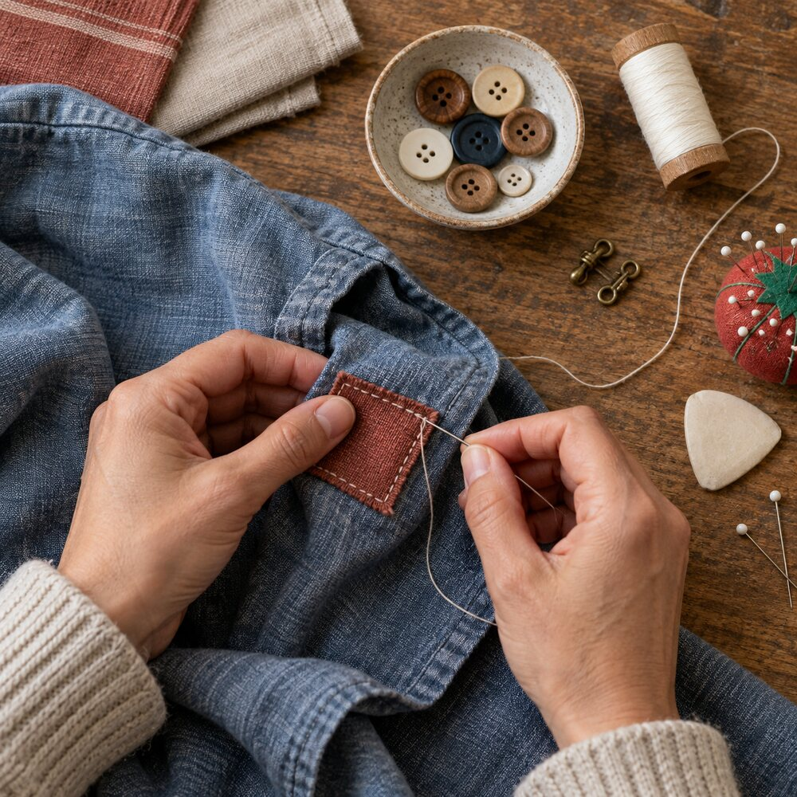

Rota da linhaPuxador de linha
Peça que sobe e desce enquanto a máquina trabalha; ela puxa a linha superior e ajuda a formar cada ponto com a linha da bobina.

Habilidades Domésticas
Medir, marcar, cortar, unir e consertar: uma linha de cada vez, a costura transforma tecido em cuidado, autonomia e peças úteis.
A caixa de costura
Ferramentas corretas protegem o tecido, dão precisão ao corte e deixam os pontos uniformes. Antes de começar, deixe a bancada limpa, iluminada e organizada.
Fita flexível, geralmente com 150 cm, usada para tirar medidas do corpo, medir tecido, barras e distâncias curvas. Não a estique; comece sempre pelo zero, não pela ponta da fita.
A tesoura de tecido serve apenas para tecido: cortar papel tira o fio e mastiga as fibras. Use uma menor para arremates; feche-a e guarde com a ponta protegida.
A espessura e a ponta devem combinar com tecido e linha. Agulha fina e afiada para algodão leve; universal para a maioria dos tecidos; ponta-bola para malha, pois separa os fios sem perfurá-los.
Marca linhas de corte, dobras, pences e posição de botões. Risque de leve no avesso e teste antes: a marca deve sair facilmente com escova, água ou vapor, conforme o tecido.
Conheça sua máquina
Os nomes variam um pouco entre modelos, mas estas peças existem na maioria das máquinas domésticas. Consulte sempre o manual do equipamento antes de desmontar ou limpar.
Peça que sobe e desce enquanto a máquina trabalha; ela puxa a linha superior e ajuda a formar cada ponto com a linha da bobina.
Pressiona o tecido contra a chapa, mantendo-o estável durante a costura. Há pés específicos, mas o universal resolve a maior parte dos trabalhos básicos.
Alavanca que sobe o pé calçador para colocar ou retirar o tecido. Costure sempre com ele abaixado.
São pequenas serrilhas sob o pé calçador que movem o tecido de trás para frente. Não puxe o tecido: apenas guie-o.
Discos e regulador que controlam a tensão da linha superior. Tensão errada deixa laços por baixo ou repuxa o tecido.
Carretel pequeno que leva a linha inferior. Deve ser enrolado por igual, encaixado corretamente e com linha compatível com a de cima.

Primeira costura
Segurança: dedos longe da agulha, cabelo preso, máquina desligada ao trocar agulha ou pé e tomada fora da água.
Acabamentos que contam
Uma bainha protege a borda do tecido contra desfiar e dá acabamento limpo. Para toalhas e lençóis, faça uma dobra estreita e outra por cima dela, prendendo com alfinetes ou alinhavo antes da costura à máquina.
Use a mesma linha em cima e na bobina e faça uma amostra com duas camadas do tecido. Pontos devem aparecer equilibrados dos dois lados, sem repuxar nem formar laços. Se o avesso enrolar, verifique se a linha está no tensor e ajuste aos poucos — uma regulagem extrema quase nunca é a solução.
Costura à mão
Marque a posição. Prenda com alguns pontos, deixando um palito entre botão e tecido para criar haste. Costure de 6 a 8 passagens pelos furos, retire o palito, enrole a linha sob o botão e arremate no avesso.
Marque o comprimento do botão mais 2 a 3 mm. Na máquina, use o ponto caseado e o pé próprio; à mão, faça pontos de festão densos em torno da abertura. Sempre teste em retalho.
Costure cada metade no avesso, reforçando os olhais ou argolas sem atravessar a parte visível. Confira o alinhamento antes de firmar os pontos.
Com a bainha dobrada, pegue um fio do tecido externo e depois poucos fios da dobra, alternando. Os pontos ficam quase escondidos na frente.
É uma sequência de pontos longos, feitos à mão para segurar dobras ou camadas antes da costura definitiva. Retire-o só depois de concluir a costura principal.
No avesso, passe a agulha sob alguns pontos e forme uma pequena laçada; atravesse a agulha pela laçada e aperte. Corte a linha deixando ponta curta.

Consertar é criar
Cerzir é reparar uma área gasta ou rasgada refazendo uma trama de fios. É diferente de apenas colar um remendo: o objetivo é reforçar sem endurecer nem repuxar.
Vocabulário de quem costura
Projeto final
Escolha um projeto e registre as etapas: materiais, medidas, molde simples, corte, montagem e acabamento. Capricho importa mais que pressa.
Pratique medidas, bainhas, tiras e bolso. Use algodão firme; deixe tiras compridas o bastante para amarrar com conforto e reforce os pontos de maior tensão.
Treine cortes retos e costuras longas. Corte duas peças por fronha, una direito com direito, deixe a abertura e faça a bainha de acabamento.
Projeto sustentável para dominar costura lateral, fundo e alças. Use tecido resistente, faça bainha na boca e costure as alças em formato de quadrado com X para reforço.